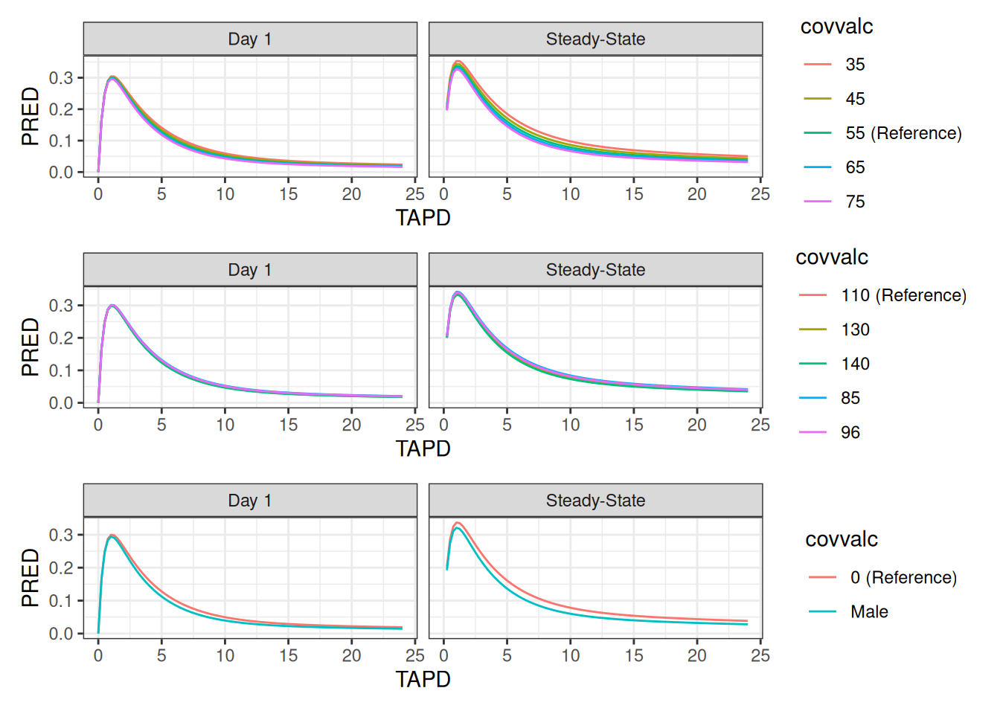
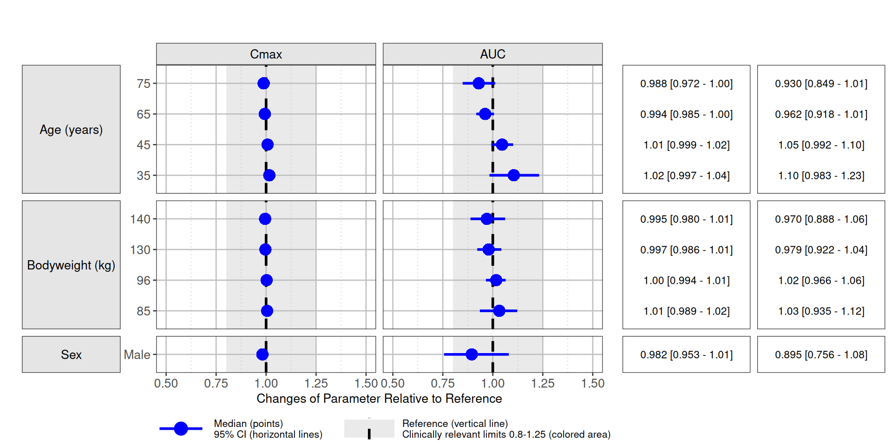
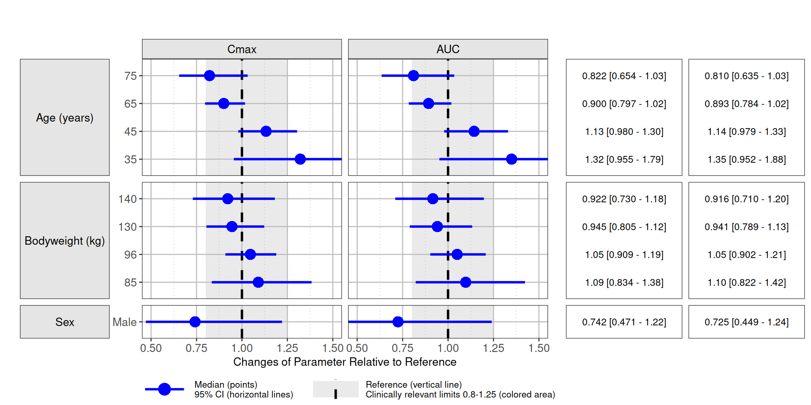
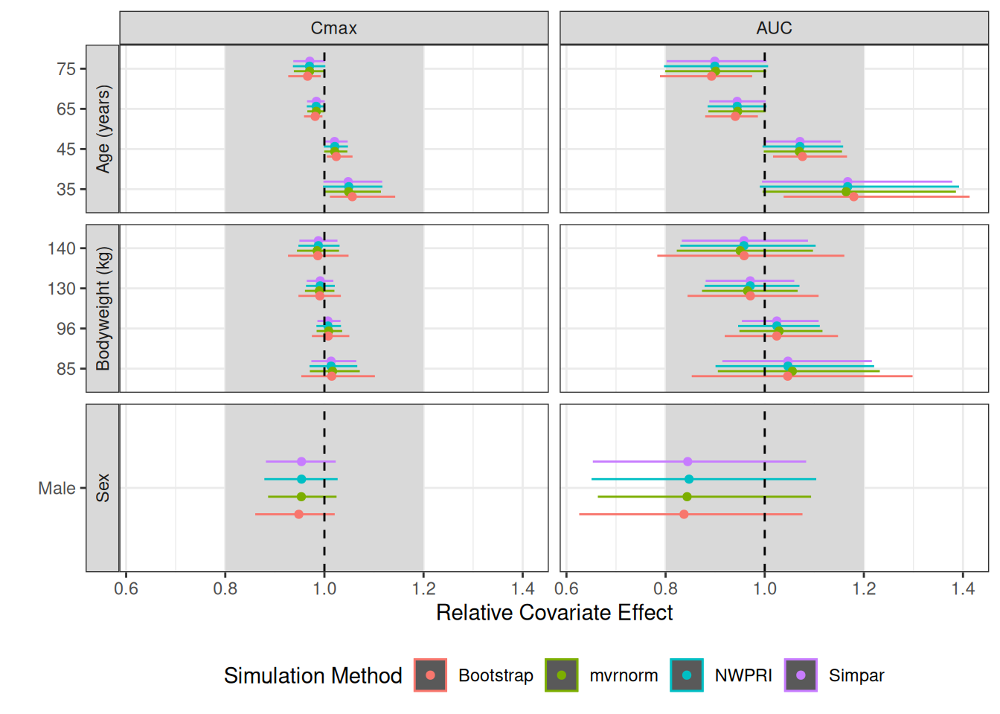

Simulation-Based Forest Plots with NMsim
Philip Delff, Boris Grinshpun
May 21, 2025 using NMsim 0.2.3
Source:vignettes/NMsim-forest.Rmd
NMsim-forest.Rmd
Introduction
The forest plot is an effective and widely recognized way to illustrate estimated covariate effects on exposure or response, or parameters related to these (e.g. clearance). The forest plot typically includes precision of the estimate in terms of a confidence interval. NMsim provides highly automated methods for simulation of Nonmem models for generation of forest plots.
Objectives
This short demonstration of generation of simulation-based forest plots using NMsim is intended to make the user ready to perform the following steps.
- Generate simulation data sets designed for forest plot simulations
- Dosing and sampling scheme using
NMcreateDoses() - Define covariates to simulate using
forestDefineCovs()
- Dosing and sampling scheme using
- Simulate with parameter uncertainty by one of
- Based on
$COVusingNMsim_NWPRI() - Based on
$COVusingNMsim_VarCov() - Using an existent bootstrap estimation (e.g. from PSN)
- Based on
- Postprocess simulation for plotting/tabulation
- Define end-points, such as an AUC, Cmax or any simulation-based endpoint
- Summarize covariate effect estimates with confidence intervals,
using
forestSummarize()
- Plot the summary as a forest plot
Each step is facilitated with efficient interfaces (R functions) and automated execution. Essentially, each step above is one function call. The results from all methods are compared in one plot.
Plotting is includied in the example using the
coveffectsplot package. Other packages or user’s own
scripts can be used for plotting.
We shall focus the main example to be simple and general. Hopefully, the user will be able to customize and apply a similar workflow to their own models with minimum effort. Folded code-chunks and references will be provided for additional features.
Prerequisites
- An estimated Nonmem model - at least, input control stream and
.extfile.- If simulating based on
$COVARIANCE, the.covfile. - If simulating based on bootstrap, either a summary of or all the
.extfiles from the boot strap estimations must be available. - If references and/or covariate quantile values are to be calculated
by NMsim (easiest option), ideally all output (
$TABLE) data sets and the input data set used for the estimation are available.
- If simulating based on
- Familiarity with
NMsim-intro.html, at least including “A first simulation withNMsim()”. - Configuration of NMsim so user can succesfully do simulation using
NMsim(). - Familiarity with methods to simulate with parameter uncertainty can
be helpful. Before settling on your final forest plot simulation, it is
recommended to understand pros and cons of the different methods
provided by NMsim as described in
NMsim-ParamUncertain.html.
Background
Forest plots include a confidence interval of the estimated or
simulated effect. The confidence interval is derived from uncertainy
estimates of the parameter set. This is not between-subject variability
(BSV), also called intra-individual variability. For NMsim to simulate
the distribution of the covariate effect, this uncertainty must be
obtained through one of two sources. Either as the result of a
succesfull $COVARIANCE step on the model, or using an
already executed bootstrap.
In some cases, the forest plot can be derived based on model estimates without simulation. This is the case for a forest plots of PK parameters such as clearance when a covariance step is available, and it can be the case with forest plots of exposure metrics if the PK is linear and only steady-state average concentration (or AUC) is of interest. If the PK is non-linear and/or exposure metrics such as Cmax which depends on multiple PK parameters are of interest, a simulation-based forest plot may be needed. As we shall see, NMsim provides a flexible and concise framework to perform the required. In fact, the simulation-based workflow is so general and easy to perform that it may be prefered even in cases where simulation is not needed.
Initialization
library(data.table)
library(NMsim)
library(NMdata)
library(NMcalc) ## Optional. Used to calculate AUC.
library(coveffectsplot) ## used for plotting
library(knitr) ## for printing tables with knitr::kable
library(ggplot2)
library(ggstance)
theme_set(theme_bw())
NMdataConf(
path.nonmem = "/opt/NONMEM/nm75/run/nmfe75", ## path to NONMEM executable
dir.sims="simtmp-forest", ## where to store temporary simulation results
dir.res="simres-forest" ## where to store final simulation results
)A model is selected.
## file.mod <- "NMsim-forest-models/xgxr134.mod"
file.mod <- system.file("examples/nonmem/xgxr134.mod",package="NMsim")Generation of simulation input data
Dosing and sampling
The simulation data set has to match the model in compartment
numbers, and it must contain all variables needed to run the NONMEM
model. We simulate daily dosing of 30 mg. col.id=NA to omit
a subject id in doses as we will instead reuse it for
multiple subjects.
doses <- NMcreateDoses(TIME=0,AMT=30,ADDL=30,II=24)
doses| ID | TIME | EVID | CMT | AMT | II | ADDL | MDV |
|---|---|---|---|---|---|---|---|
| 1 | 0 | 1 | 1 | 30 | 24 | 30 | 1 |
We sample every 15 minutes on the first day and one day in steady-state.
## add a sampling scheme
time.sim <- c(
seq(0,24,.25), ## Day 1
seq(0,24,.25)+30*24 ## Steady-State
)
dt.sim <- NMaddSamples(doses,TIME=time.sim,CMT=2,as.fun="data.table")
dt.sim[TIME<=24,period:="Day 1"]
dt.sim[TIME>=30*24&TIME<=31*24,period:="Steady-State"]The following table summarizes the number of doses and samples. Notice, the doses are repeated.
| period | EVID | ADDL | II | N |
|---|---|---|---|---|
| Day 1 | 1 | 30 | 24 | 1 |
| Day 1 | 2 | NA | NA | 97 |
| Steady-State | 2 | NA | NA | 97 |
How to sample multiple endpoints
There is only one analyte in this data set. If for instance, you have a parent and a metabolite, adding sampling times could look like this:
dt.sim.parent.metab <-
NMaddSamples(doses,TIME=time.sim,CMT=data.frame(analyte=c("parent","metabolite"),CMT=c(2,3)))We also add “Time after previous dose” which is helpful for plotting.
This is done using NMdata::TAPD()
dt.sim <- addTAPD(dt.sim)We used the period column to distinguish time intervals
for the analysis. We have to remember to do the postprocessing by the
values in that column. If you are looking at multiple analytes, remember
to postprocess by the column that distringuishes those, too. In this
example, that would be analyte.
Define covariates to analyze
NMsim::forestDefineCovs() can be used to construct a set
of covariate value combinations needed to derive a forest plot. It
varies one covariate at a time, keeping all other covariates at their
reference value. It can derive references and quantiles from a data
set.
For reference values we use median in the observed population for continuous covariates and manually select “Female” as the reference for sex. Here is a short example:
## reading output and input tables from estimation. Used to determine
## reference values and quantiles.
data.ref <- NMdata::NMscanData(file.mod,quiet=TRUE)
## Specifying the covariates
covs <- forestDefineCovs(
AGE=list(ref=55,values=c(35,45,65,75),label="Age (years)"), ## Age by specific values
## notice, values OR quantiles can be provided
WEIGHTB=list(ref=median, quantiles=c(10,25,75,90)/100, label="Bodyweight (kg)"), ## Bodyweight by quantiles
MALEN=list(ref=c(Female=0), values=c(Male=1), label="Sex"), ## Sex is treated categorical
data=data.ref,
as.fun="data.table"
)- We read the estimation data set
data.ref, and pass that as thedataargument toforestDefineCovs(). Using this,forestDefineCovs()can evaluate specified quantiles of covariates on the observed or any desired population. - We specify reference values and simulation covariate values as
specific values (see
AGE) or covariate quantiles (WEIGHTB). If quantiles are derived byforestDefineCovs(), the names of the covariates (here,AGE,WEIGTB,MALEN) must be columns indata. - For categorical variables, we can label numeric values like
ref=c(Female=0)which means we labelMALEN==0as “Female”.
When deriving quantiles, forestDefineCovs() will first
derive unique covariate values for each subject in the data set, then
derive the quantiles. Each subject hence contributes equally,
independently of how many data points they contribute.
## adding distinct ID's for each combination of covariates
covs[,ID:=.GRP,by=.(type,covvar,covval)]| covvar | covval | covvalc | covlabel | covref | type | AGE | MALEN | WEIGHTB | ID |
|---|---|---|---|---|---|---|---|---|---|
| NA | NA | NA | NA | NA | ref | 55 | 0 | 110 | 1 |
| AGE | 35 | 35 | Age (years) | 55 | value | 35 | 0 | 110 | 2 |
| AGE | 45 | 45 | Age (years) | 55 | value | 45 | 0 | 110 | 3 |
| AGE | 65 | 65 | Age (years) | 55 | value | 65 | 0 | 110 | 4 |
| AGE | 75 | 75 | Age (years) | 55 | value | 75 | 0 | 110 | 5 |
| WEIGHTB | 85 | 85 | Bodyweight (kg) | 110 | value | 55 | 0 | 85 | 6 |
| WEIGHTB | 96 | 96 | Bodyweight (kg) | 110 | value | 55 | 0 | 96 | 7 |
| WEIGHTB | 130 | 130 | Bodyweight (kg) | 110 | value | 55 | 0 | 130 | 8 |
| WEIGHTB | 140 | 140 | Bodyweight (kg) | 110 | value | 55 | 0 | 140 | 9 |
| MALEN | 1 | Male | Sex | 0 | value | 55 | 1 | 110 | 10 |
We now have all combinations of covariates in the object called
covs. Notice the type column which
distinguishes the reference combination in contrast to the other
simulations where one covariate is being varied at a time.
Plots of Typical-Subject Simulations
## repeating the doses for all combinations of covariates. Using NMdata::egdt()
dt.sim.noid <- as.data.table(dt.sim)[,!("ID")]
dt.sim.covs <- egdt(dt.sim.noid,covs)## data nrows ncols
## <char> <int> <int>
## 1: dt1 195 13
## 2: dt2 10 10
## 3: result 1950 23
### same thing, the data.table way
## dt.sim.covs <- covs[,dt.sim.noid[],by=covs]
### same thing, dplyr way
## dt.sim.covs <- dplyr::select(dt.sim,-ID) |>
## cross_join(covs)
setorder(dt.sim.covs,ID,TIME,EVID)
simres.typ <- NMsim(file.mod=file.mod,
data=dt.sim.covs,
name.sim="singlesubj_covs",
table.vars=c("PRED"),
typical=TRUE,
as.fun="data.table")
simres.typ <- NMreadSim("simres-forest/xgxr134_singlesubj_covs_MetaData.rds",as.fun="data.table")
simres.ref <- simres.typ[type=="ref"]
all.plots <- split(simres.typ[type=="value"],by="covvar")|>
lapply(
function(x){
covvar.this <- x[,unique(covvar)]
simres.ref[,covvalc:=paste(get(covvar.this),"(Reference)")]
all <- rbind(x,simres.ref)
ggplot(all,aes(TAPD,PRED,colour=covvalc))+
geom_line()}+
facet_wrap(~period)
)
patchwork::wrap_plots(all.plots,ncol=1)
Simulation With Parameter Uncertainty
We need to run the simulations repeatedly, sampling parameters based
on uncertainty estimates. This can be done in various ways. First of
all, one must choose between non-parametric and parametric sampling.
Non-parameteric sampling is typically based on a bootstrap, and the
parametetric sampling is often based on a successfull
$COVARIANCE step. NMsim has methods to do
either type, and multiple methods are available for parametric sampling.
The best source of information on these different methods is the
ACOP2024 poster Simulation
of clinical trial predictions with model uncertainty using NMsim by
Sanaya Shroff and Philip Delff.
In this case we shall use parametric sampling, relying on a Nonmem
$COVARIANCE step. Since in this case we are simulating
typical subjects (random effects fixed at zero), we only need
variability on the fixed effects (THETA’s). Multiple methods are
available in NMsim to do this. We use
NMsim_NWPRI - which automates simulation using the Nonmem
NWPRI subroutine to sample the parameter sets. This simulation method
excels in being fast to execute because it simulates all the parameter
sets sequentially in one Nonmem run. It is important to run this with
typical=TRUE. If between-subject variability is desired,
please refer to NMsim-ParamUncertain.html.
simres.forest.nwpri <- NMsim(file.mod # path to NONMEM model
,data=dt.sim.covs, # simulation dataset
,name.sim="nwpri_forest" # output name suffix
,method.sim=NMsim_NWPRI # sampling with NWPRI
,subproblems=1000 ## number of parameter sets sampled
,typical=TRUE # FALSE to include BSV
,table.vars=cc(PRED,IPRED) # output table variables
,seed.R=342 # seed for reproducibility
)If you encounter issues with samples that do not run, consider
whether any of your uncertainty estimates on THETA’s could
lead to sampled THETA’s that could make the model be
undefined. This would often be absorption parameters, clearences,
volumes or any other strictly positive parameter which is estimated with
poor precision. If this happens, you may want to go back and estimate
that THETA on the log scale to make sure all sampled values
will be positive.
Show example
A quick way to look for this is by combining parameter estimates
(from the .ext file) and the automatic labeling of the
parameters using NMdata::NMrelate().
NMdata::NMreadExt(file.mod,as.fun="data.table")[par.type=="THETA",.(RSE=se/value),by=.(par.name,FIX)] |>
NMdata::mergeCheck(NMdata::NMrelate(file.mod,par.type="THETA",as.fun="data.table")[,.(par.name,code)],by="par.name",quiet=TRUE) | par.name | FIX | RSE | code |
|---|---|---|---|
| THETA(1) | 0 | 0.0804007 | LTVKA=THETA(1) |
| THETA(2) | 0 | 0.0136327 | LTVV2=THETA(2) |
| THETA(3) | 0 | 0.0789812 | LTVCL=THETA(3) |
| THETA(4) | 0 | 0.0481949 | LTVV3=THETA(4) |
| THETA(5) | 0 | 0.0292952 | LTVQ=THETA(5) |
| THETA(6) | 0 | 0.4222300 | AGEEFF=THETA(6) |
| THETA(7) | 0 | 1.9160784 | WEIGHTEFF=THETA(7) |
| THETA(8) | 0 | 0.1041536 | MALEEFF=THETA(8) |
A large RSE is a potential issue for strictly positive parameters
(RSE=0.25 for a parameter with a positive estimate corresponds to
roughly 1/10,000 chance that a sample is negative). In this case,
THETAs are estimated on log scale, and the covariate
effects could be negative, so this model does not seem to have such
issues.
Post processing
NMsim provides a function to do the post processing of
the set of simulations setup by forestDefineCovs(). The key
steps performed by this function are outlined below. Most importantly,
it normalizes the exposures by the reference value for each sampled set
of parameters. Then, it derives median and a confidence interval as
quantiles in the simulated distribution.
The step required by the user is to define the functions to derive
relevant exposure metrics. We will use AUC 0-24h and Cmax. We are using
IPRED for the calculations. Notice, the simulation was run
with typical=TRUE so PRED and
IPRED should be the same. However, with depending on the
Nonmem version, NWPRI works a little differently, and
IPRED has to be used prior to Nonmem 7.6.0.
### Define exposure metrics
funs.exposure <- list(
"Cmax"=function(x) max(x$IPRED)
,"AUC"=function(x) trapez(x$TIME,x$IPRED)
## ,"Concentration at 4 hours"=function(x) x$value[x$TAPD==4]
)
sum.uncertain <- forestSummarize(simres,
funs.exposure = funs.exposure,
by=cc(period),
cover.ci=.95
)
setDT(sum.uncertain)
sum.uncertain[covlabel=="Bodyweigt (kg)",covlabel:="Bodyweight (kg)"]Plotting
We will use the R package coveffectsplot for plotting.
coveffectsplot::forest_plot() requires certain column names
so we adjust those first. An acceptance region such as the 80%-125% bio
equivalence is included.
setDT(sum.uncertain)
setnames(sum.uncertain,
cc(covvalf,predmm,predml,predmu,metric.var),
cc(label,mid,lower,upper,paramname)
)
sum.uncertain[,MEANVAL:=mid]
sum.uncertain[,covname:=covlabel]
nsig <- 3
sum.uncertain[,LABEL := sprintf("%s [%s - %s]",signif2(mid,nsig),signif2(lower,nsig),signif2(upper,nsig))]
descrip.legend <- "Reference (vertical line)\nClinically relevant limits 0.8-1.25 (colored area)"
### I don't know why forest_plot() needs this
label_value <- function(x,... )x
fun.plot <- function(data,...){
textsize <- 10
forest1 <- forest_plot(
data = data,
facet_formula = "covlabel ~ paramname",
facet_scales = "free_y",
facet_space = "free_y",
xy_facet_text_bold = FALSE,
plot_table_ratio = 1.7,
table_text_size = 3,
x_label_text_size = textsize,
y_label_text_size = textsize,
x_facet_text_size = textsize,
y_facet_text_size = textsize,
base_size=textsize,
strip_placement = "outside",
table_position = "right",
legend_order = c("pointinterval", "ref", "area"),
x_range = c(.5,1.5),
ref_legend_text = descrip.legend,
area_legend_text = descrip.legend,
facet_switch = c("y"),
legend_position="bottom",
...
)
}
forest.day1 <- fun.plot(sum.uncertain[period=="Day 1"])
forest.ss <- fun.plot(sum.uncertain[period=="Steady-State"])
Simulation using multivariate normal distribution
We shall use the method provided by NMsim based on the multivariate
normal distribution (mvrnorm). This method is selected
because it is adequate for sampling THETA’s, it does not
require additional software installed, other than Nonmem.
ext.mvrnorm <- samplePars(file.mod=file.mod,nsim=1000,method="mvrnorm",seed.R=6789)
simres.forest.mvrnorm <- NMsim(file.mod # path to NONMEM model
,data=dt.sim.covs, # simulation dataset
,name.sim="mvrnorm_forest" # output name suffix
,method.sim=NMsim_VarCov # sampling with mvrnorm
,ext=ext.mvrnorm
,typical=TRUE # FALSE to include BSV
,table.vars=cc(PRED,IPRED) # output table variables
,seed.R=342 # seed for reproducibility
,sge=TRUE # TRUE if submitting to a cluster
,nc=1
)Simulation using simpar for parameter sampling
ext.simpar <- samplePars(file.mod=file.mod,nsim=1000,method="simpar",seed.R=789)
simres.forest.simpar <- NMsim(file.mod # path to NONMEM model
,data=dt.sim.covs, # simulation dataset
,name.sim="simpar_forest" # output name suffix
,method.sim=NMsim_VarCov # sampling with mvrnorm
,ext=ext.simpar
,typical=TRUE # FALSE to include BSV
,table.vars=cc(PRED,IPRED) # output table variables
,seed.R=342 # seed for reproducibility
,sge=TRUE # TRUE if submitting to a cluster
,nc=1
)Simulation using bootstrap for parameter sampling
dir.bs <- "NMsim-forest-models/xgxr134_bs_N1000/m1"
exts.bs <- list.files(dir.bs,pattern=".+\\.ext$",recursive=T,full.names = TRUE)
ext.boot <- NMreadExt(exts.bs,as.fun="data.table")
simres.forest.boot <- NMsim(file.mod # path to NONMEM model
,data=dt.sim.covs, # simulation dataset
,name.sim="boot_forest" # output name suffix
,method.sim=NMsim_VarCov # sampling with mvrnorm
,ext=ext.boot
,typical=TRUE # FALSE to include BSV
,table.vars=cc(PRED,IPRED) # output table variables
,seed.R=342 # seed for reproducibility
,sge=TRUE # TRUE if submitting to a cluster
,nc=1
)Comparison of different simulation methods
The forest were simulated with all the methods mentioned above. As
expected, the forest plots are very similar for NWPRI, mvrnorm, and
simpar. This is expected because they all sample THETAs from the
multivariate normal distribution. Among these, NMsim_NWPRI
is the fasted to execute. A bootstrap may be desired or needed for a
non-parametric approach. Remember that this is a very simple model, and
similarities in the results based on the parametric models and bootstrap
cannot be generalized based on this.
Collecting, Summarizing, and Plotting all Results
simres.forest.nwpri <- NMreadSim(c("simres-forest/xgxr134_nwpri_forest_MetaData.rds"),as.fun="data.table")
simres.forest.mvrnorm <- NMreadSim(c("simres-forest/xgxr134_mvrnorm_forest_MetaData.rds"),as.fun="data.table")
simres.forest.simpar <- NMreadSim(c("simres-forest/xgxr134_simpar_forest_MetaData.rds"),wait=TRUE,as.fun="data.table")
simres.forest.boot <- NMreadSim(c("simres-forest/xgxr134_boot_forest_MetaData.rds"),wait=T,as.fun="data.table")
simres.forest.all <- rbind(simres.forest.nwpri[,method:="NWPRI"],
simres.forest.mvrnorm[,method:="mvrnorm"],
simres.forest.boot[,method:="Bootstrap"]
,simres.forest.simpar[,method:="Simpar"]
,fill=T
)
### How many samples used with each method?
unique(simres.forest.all[,.(method,model.sim,NMREP)])[,.N,by=.(method)]| method | N |
|---|---|
| NWPRI | 1000 |
| mvrnorm | 1000 |
| Bootstrap | 1000 |
| Simpar | 1000 |
sum.uncertain <- forestSummarize(simres.forest.all,
funs.exposure = funs.exposure,
by=cc(method,period),
cover.ci=.95,
as.fun="data.table"
)
plot.compare <- ggplot(sum.uncertain[period=="Steady-State"],aes(predmm,covvalf,colour=method))+
geom_rect(aes(xmin=.8,xmax=1.2,ymin=-Inf,ymax=Inf,colour=NULL),fill="grey85")+
geom_rect(aes(xmin=predml,xmax=predmu,ymin=covvalf,ymax=covvalf),
position=ggstance::position_dodgev(height=0.5))+
geom_point(position=ggstance::position_dodgev(height=0.5))+
facet_grid(covlabel~metric.var,scales="free_y",switch="y")+
geom_vline(xintercept=1,linetype=2)+
labs(y="",x="Relative Covariate Effect",colour="Simulation Method")+
theme(legend.position="bottom")
Post-processing step-by-step
We are including the code from the main steps in the post processing
function, NMsim::forestSummarize(). It is important that
the scientist understands that what the forest plots derived in this
document represent is the relative effect of the covariate on the
exposure metric. This is derived by
NMsim::forestSummarize() as quantiles of the exposure
relative to the reference subject. The confidence interval hence
expresses the uncertainty on the covariate effect for a subject with
other covariates at reference values.
Details on code used for summarizing forest plot statistics (click to show)
Notice, the code below consists of snippets from the
NMsim::forestSummarize() function. The code is not intended
to be used on its own.
### use only simulated samples
simres <- as.data.table(data)[EVID==2]
### summarizing exposure metrics for each subject in each model,
### each combination of covariates
resp.model <- simres[,lapply(funs.exposure,function(f)f(.SD)),
by=c(allby,modelby,"ID")]
### the exposure metrics in long format.
mvars <- names(funs.exposure)
resp.model.l <- melt(resp.model,measure.vars=mvars,variable.name="metric.var",value.name="metric.val")
## deriving median by model and time to have a single value per
## model This is only relevant in case multiple subjects are
## simulated by each model.
sum.res.model <- resp.model.l[
,.(predm=median(metric.val))
,by=c(modelby,allby,"metric.var")
]
### making reference value a column rather than rows.
## column with refrence exposure value is called val.exp.ref
### summarize distribution of ratio to ref across parameter samples/models
sum.uncertain <- sum.res.model[
,setNames(as.list(quantile(predm/val.exp.ref,probs=c((1-cover.ci)/2,.5,1-(1-cover.ci)/2))),
c("predml","predmm","predmu"))
,by=c(allby,"metric.var")]